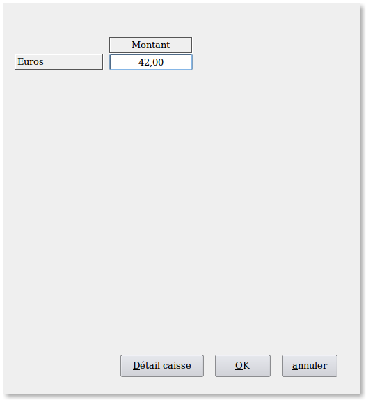
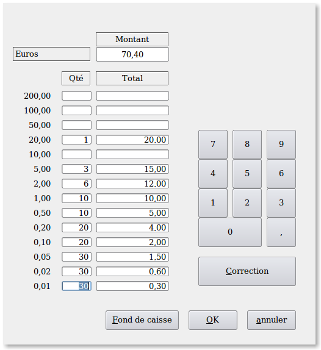

~ Laurux.Pos ~

~ Laurux.Pos ~ |
|
|
|
Saisie du fond de caisse.

A l'arrivée sur le menu de saisie de
fond caisse le programme affiche le montant précédent.
Si ce montant doit être modifié, on a
deux
possibilités. Soit on modifie directement le montant affiché soit on
clique sur le bouton "Détail caisse"
pour afficher l'écran permettant la saisie du détail de la caisse.

----------------------------------------------------------------------------------------------------------------------